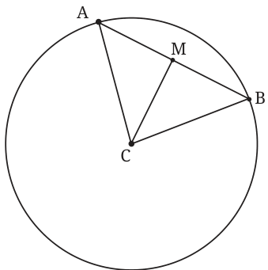

Theorem 4: The line joining the centre of a circle and the midpoint of a chord of the circle is perpendicular to the chord.
Let us see why this is true. Draw a circle with centre C (Fig. 5.12). Draw any chord AB. Let M be the midpoint of AB. We must show that CM is perpendicular to AB. Explanation: CAB is an isosceles triangle. AB is the base and \(CA = CB\). So, \(\angle A = \angle B\). M is the midpoint of AB. So, \(AM = BM\). By the SAS congruence, \(\triangle CMA\) is congruent to \(\triangle CMB\). So, \(\angle CMB = \angle CMA\). But \(\angle CMB + \angle CMA = 180 ^{\circ}\) (angles on

So, both angles are \(90 ^{\circ}\) . That is, CM is perpendicular to AB.
- 1.Can you explain why the converse to Theorem 4 is true, i.e., why
does the perpendicular from the centre of a circle to a chord of the circle bisect the chord? (Hint: Use Fig. 5.12. You are told that \(\angle CMA = \angle CMB = 90 ^{\circ}\) . You need to show that \(AM =\) BM.)
- 2.An isosceles triangle ABC is inscribed in a circle, with \(AB = AC\).
Show that the altitude from A to BC passes through the centre of the circle.
- 3.Two parallel chords of lengths 6 cm and 8 cm are on opposite sides
of the centre of a circle. If the radius of the circle is 5 cm, find the distance between the midpoints of the chords.
From Question 1 above, we have the following result. Theorem 5: The perpendicular from the centre of a circle to a chord of the circle bisects the chord.